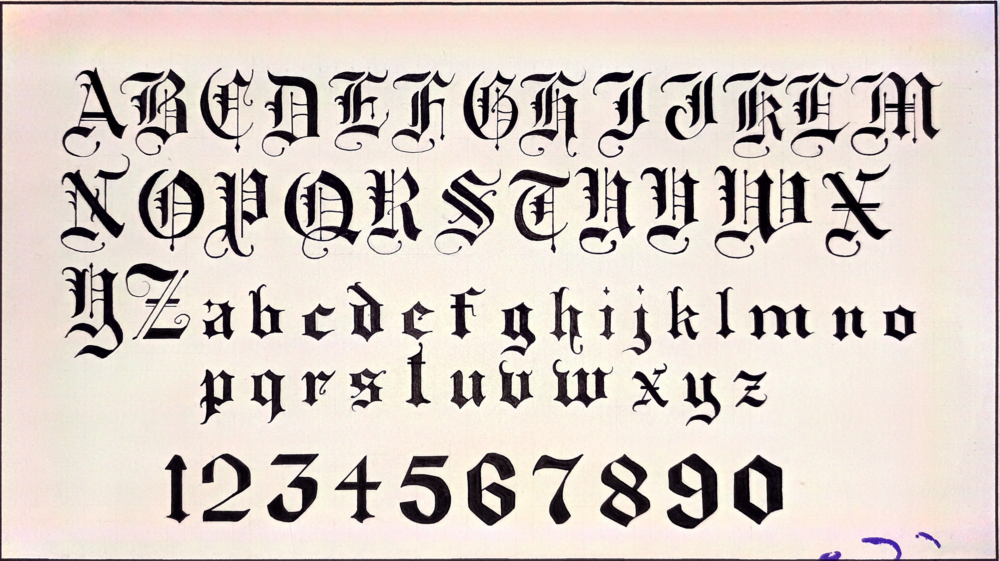
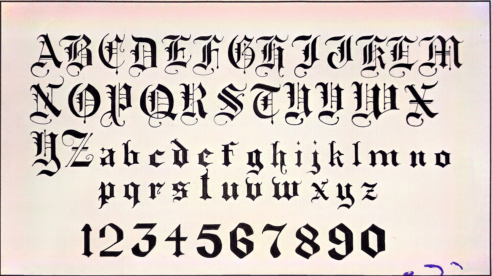

Home
Here are some of my architectural drafting plates during my first year.
 

Here are some of my architectural drafting plates during my second year.
KNOW MORE ABOUT ME
I'm Rimando, Mariz O., 20 year old, EARIST Cavite student from BSIT major in Drafting Technology technology, living in Dasmarinas, Cavite.
I used to enjoy drawing when I was younger. The main thing I liked to draw was the pogs, which became my drawing reference because they have so many anime characters. My parents and other people told me I was good at drawing, and since I was a stupid child, I believed them. My parents also encouraged me to enroll in the drafting course when I was still in grade 9. Drawing is also how I like to think that I am good at something or that I know something, but as time passes, I realize that I have no talent at drawing and can just copy, even if I still find it enjoyable.
Aside from the arts, I love to watch music videos and read the website stories. I also love music, and I spend a lot of time listening to it. I always make sure to have music playing when I work on something.
Contact
I don't post my artworks online so there's no need to put my contact. Thats all, Thank you!